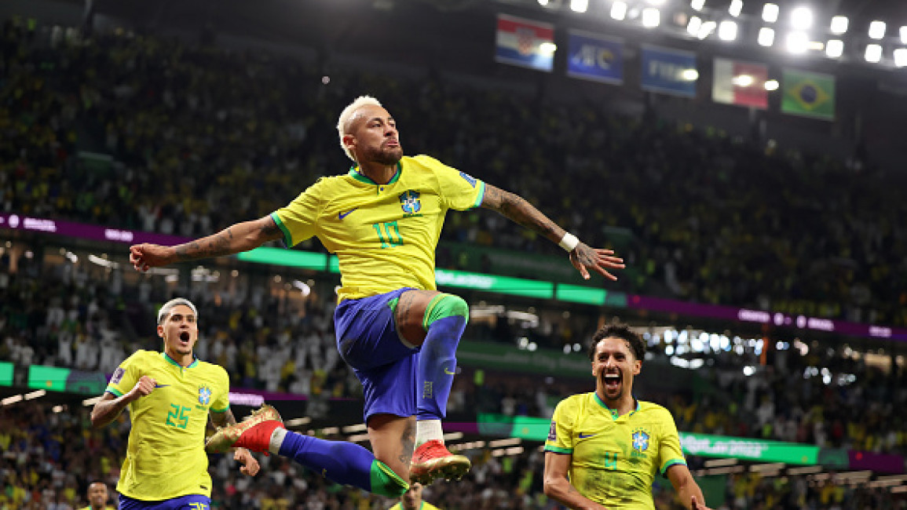

Neymar Jr. marca hat-trick e lidera o Brasil para a vitória na final da Copa América
Rio de Janeiro, 1º de julho de 2023 - Neymar Jr., o astro brasileiro do Paris Saint-Germain, brilhou intensamente na final da Copa América realizada hoje no Estádio do Maracanã. Com uma atuação impressionante, o atacante marcou três gols e liderou a seleção brasileira para a conquista do título continental.
O Brasil enfrentou a Argentina em uma partida eletrizante que atraiu a atenção de fãs de futebol de todo o mundo. Desde o início do jogo, Neymar mostrou sua habilidade e visão de jogo, desequilibrando a defesa argentina com seus dribles rápidos e passes precisos.
Aos 25 minutos do primeiro tempo, Neymar abriu o placar com um chute potente de fora da área, deixando o goleiro adversário sem chances de defesa. A torcida brasileira, que lotava o estádio, foi ao delírio com o gol.
No segundo tempo, Neymar voltou ainda mais determinado e ampliou a vantagem brasileira aos 60 minutos, em uma jogada individual espetacular. Recebendo a bola na intermediária, ele driblou três adversários e finalizou com categoria, aumentando a festa nas arquibancadas.
O terceiro gol de Neymar veio aos 75 minutos, em uma cobrança de pênalti. Com tranquilidade, o camisa 10 converteu a penalidade, assegurando sua equipe no controle absoluto da partida.
Além dos gols, Neymar também contribuiu com assistências e jogadas de perigo ao longo do jogo, mantendo a defesa argentina constantemente pressionada. Sua atuação foi fundamental para a conquista do Brasil, que venceu por 3 a 0 e sagrou-se campeão da Copa América.
Ao final da partida, Neymar foi escolhido como o melhor jogador do torneio e recebeu o prêmio de artilheiro, com nove gols marcados em toda a competição. Em entrevista após o jogo, o craque brasileiro expressou sua alegria e gratidão pela conquista, dedicando o título à torcida e aos seus companheiros de equipe.
Com mais essa atuação brilhante, Neymar reafirma seu status como um dos maiores jogadores da atualidade, consolidando seu legado no futebol mundial. Sua capacidade de decisão e talento indiscutível continuam a encantar os fãs e a inspirar jovens jogadores ao redor do globo.